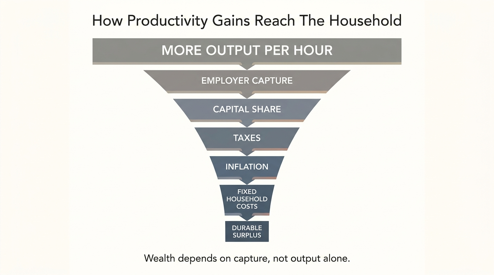

The Productivity-Income Disconnect
Modern workers are taught a simple bargain: become more productive, create more value, and income will rise with it. That bargain still holds in some firms, some occupations, and some short periods. It does not hold cleanly enough at the aggregate level to use as a household planning assumption. Productivity can rise while real pay stalls, labor share compresses, benefits become less portable, and the household captures less of the value it helped create.
The gap is not ideological folklore. It is partly definitional, partly structural, and partly distributive. Productivity tracks output per hour. Compensation tracks what workers are paid. Those two measures can diverge because prices differ, nonwage components move differently, capital absorbs more of the gains, or bargaining power weakens. For WealthMeter readers, the key point is simpler: household income should not be modeled as if broad productivity growth will automatically flow back to labor in proportionate form.
Core thesis: the productivity-income disconnect is the gap between value creation and household capture. The established fact is that productivity and compensation do not move in lockstep over time. The practical inference is that workers need ownership, portability, savings discipline, and bargaining power because productivity alone does not guarantee a rising household share.

What The Official Data Actually Shows
The Bureau of Labor Statistics has been explicit for years that productivity and compensation have diverged since the 1970s, even if the size of the gap depends on which price deflator and compensation concept one uses. That nuance matters. It prevents lazy slogans. It does not reverse the central observation that the relationship is no longer simple.
The more recent data reinforces the same caution. In the BLS release dated May 7, 2026 for first-quarter 2026 productivity and costs, nonfarm business labor productivity rose at a 0.8 percent annualized rate while hourly compensation rose 3.1 percent, yet real hourly compensation fell 0.5 percent in the quarter. The same release reported labor share at 54.1 percent, the lowest value in the series since 1947. One quarter does not settle a decades-long debate. It does show why workers should distinguish nominal pay, real pay, and total output.
This is the first correction to popular thinking. Productivity is not wages. It is a wider system measure. A household that treats one as a direct proxy for the other is building on the wrong variable.
Why The Gap Exists
Part of the disconnect is measurement. Output prices and consumer prices do not move identically, so compensation can appear weaker after adjusting for the prices households actually pay. Part of it is composition. Benefits, depreciation, and the changing mix of sectors alter how output gains are distributed. Part of it is bargaining and capital structure. Firms with stronger market power, weaker labor leverage, more intangible capital, or more automation can convert productivity gains into profits, buybacks, or reinvestment without passing the gains through proportionately to workers.
That means the household cannot rely on national productivity growth as a personal income thesis. It must ask a narrower question: in my role, my sector, and my compensation structure, how much of incremental value creation is likely to reach me after prices, taxes, and bargaining frictions?
This is one reason the topic belongs beside The Salary Ceiling Illusion and The Skill Obsolescence Curve. A worker can be more productive and still face a flatter income path if the market value of that productivity is captured elsewhere or repriced through cheaper tools and wider labor supply.
Why Households Misread The Problem
Most households do not track labor share, deflators, or unit labor costs. They track salary, bonuses, and career prestige. That is reasonable at the personal level, but it creates a blind spot. A role can remain demanding and economically productive while its share of enterprise value shrinks. The worker experiences the same or greater effort and assumes that compensation should keep following. The organization may see the output as less scarce, more standardized, or more replaceable than before.
This is why productivity stories can feel false at the household level. Workers are told the economy is producing more value, yet their own housing, healthcare, childcare, and insurance stack absorbs most of the gain. The macro system may be richer. The household may not be materially freer.

The Wealth Consequence
Once productivity and income are separated, wealth planning changes. The disciplined household stops assuming that hard work, higher efficiency, or macro growth will solve its balance-sheet problem automatically. It focuses instead on conversion. How much of gross pay survives prices and taxes? How portable are the benefits tied to the job? How much of compensation comes from salary versus ownership? How many months of living costs can be financed if productivity rises but labor bargaining power falls?
This is the real bridge from macroeconomics to household resilience. If a worker captures only a thin fraction of marginal productivity gains, then wealth must be built through explicit mechanisms: savings rate, asset ownership, geographic arbitrage, benefit portability, and deliberate exposure to upside that is not limited to wage income alone.
That does not mean every worker needs to found a company or speculate in private markets. It means workers should stop treating salary as the automatic delivery channel for the value they create. A household that understands the disconnect builds defenses earlier.
What A Better Response Looks Like
- Track real pay, not only nominal pay. Inflation-adjusted purchasing power is the relevant household metric.
- Separate labor income from ownership income. Productivity gains often flow more directly to owners than to employees.
- Build bargaining power before it is needed. Outside options, portable skills, and liquidity matter when pay growth stops tracking effort.
- Treat fixed-cost growth as a threat to capture. The more overhead the household carries, the less of any compensation gain becomes wealth.
- Assume conversion friction. Taxes, employer benefit design, and local cost structure will usually absorb more of the gain than optimistic models suggest.
Known, Inferred, And Unknown
| Category | Assessment |
|---|---|
| Known | BLS has documented a long-run divergence between labor productivity and compensation growth, although the measured size depends on how compensation and prices are defined. |
| Known | In the May 7, 2026 BLS release for first-quarter 2026, nonfarm productivity rose while real hourly compensation declined and labor share hit a series low. |
| Known | Household purchasing power depends on inflation, taxes, benefits, and fixed costs, not only on nominal compensation growth. |
| Inferred | Many workers still use effort or enterprise output as a rough proxy for future compensation, even in labor markets where capture has become less reliable. |
| Inferred | The households most resilient to the disconnect are those with some ownership exposure, liquidity, and lower dependence on one compensation channel. |
| Unknown | How artificial intelligence, concentration, and new labor-market structures will change the future share of productivity gains that reaches white-collar workers across industries. |
The Practical Reading For WealthMeter
The productivity-income disconnect belongs in the income-architecture lane because it explains why strong macro stories can coexist with disappointing household autonomy. The household does not need to win a theory debate to use the insight. It only needs to stop assuming that becoming more useful automatically produces proportionate personal capture.
That change in posture is financially important. Once the worker treats capture as contested rather than automatic, the right priorities become clearer: hold a larger real liquidity buffer, avoid lifestyle inflation that assumes seamless pass-through, negotiate for upside where possible, and convert peak earning years into assets before the share of gains narrows again.
Source List
U.S. Bureau of Labor Statistics. Productivity and Costs, First Quarter 2026, Preliminary. Published May 7, 2026.
U.S. Bureau of Labor Statistics. Understanding the Labor Productivity and Compensation Gap. Beyond the Numbers. June 2017.
U.S. Bureau of Labor Statistics. Productivity Home Page. Accessed May 13, 2026.
Supporting WealthMeter context on salary ceilings, skill obsolescence, and golden handcuffs.
Stress-test the lifespan side of this balance-sheet story.
Open the matching LifeMeter scenario with a prefilled planning profile so the wealth case and the health-runway case can be read together.